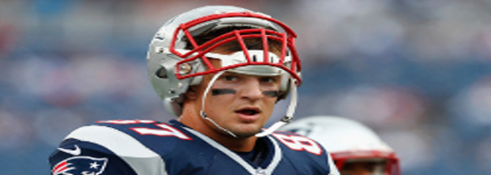

Power Moves Only

The Hoodie is back at it again this offseason with a series of moves that are leaving the rest of the league wetting their shorts. First, lets start with the Chandler Jones trade. The Pro-Bowl DE was one of the best players in the league last year, leading the Patriots with 12.5 sacks. This man is a freak of nature and an unbelieveable football player. Despite these facts, he was owed upwards of $8 million next season. It wouldn't have been possible to keep him, along with Jamie Collins, Hightower and Butler, whose contracts will all be up at the same time. So what did Bellichick do? He goes out and grabs another second round pick to make up for the tragic pillaging of the Patriots first rounder, and gets a 7th overall pick guard Jonathan Cooper. I can't help thinking back to Richard Seymore in '09. I was devistated at the time, but it turned out to be the right move.
Filling the void, Bill goes out and signs DE Chris Long, another monster with about a third of the contract of Jones for a one year contract. Then he does it again and picks up LB Shea McCellan on a three year $8.9 million contract. You give Bill some cap space to play around with and he goes and secures what should be two all-star additions to an up-and-coming elite defense.
You also may have heard about Gronk's tweet, covered here. The patriots don't mess around with contracts and hold-outs, and Gronk is no exceptions. So what does Bellichik do? He goes and signs Martellus Bennett on a 4 year, $20 million contract. Not only is this a warning to keep Gronkowski in line, but it opens up a whole new level of offense, bringing back the two TE sets that we saw with Hernandez. Here is Rex Ryan talking about the threat The wheels are always turning in the Patriots Headquarters. #pinkstripes